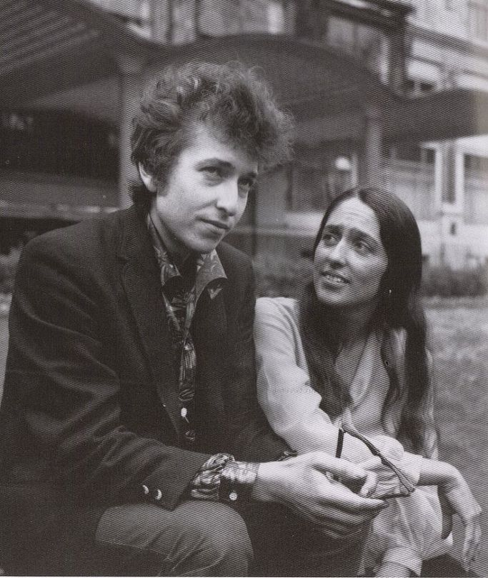
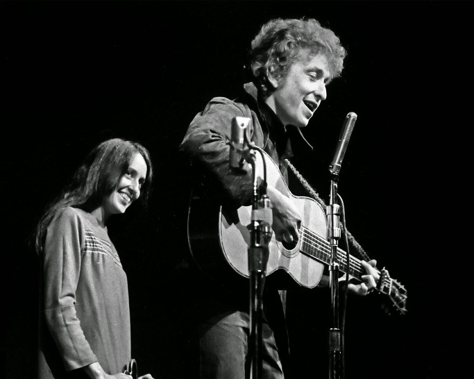
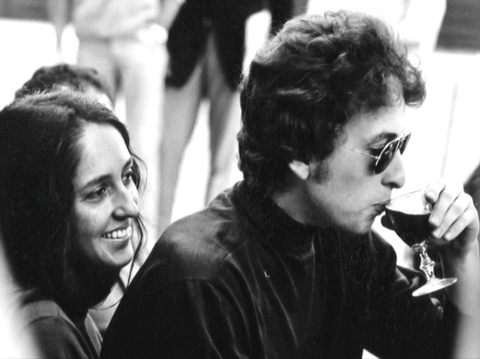
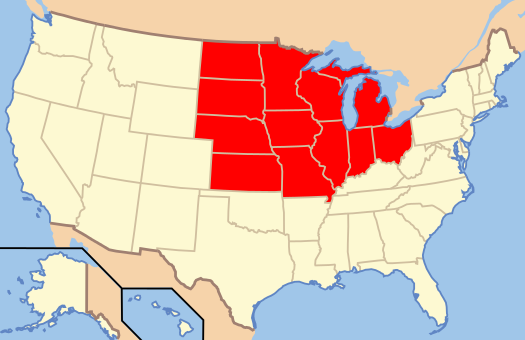

Diamonds and Rust by Joan Baez
게시: 2017-11-14T23:53:54+09:00
60~70년대 포크 뮤직을 이끌었던 전설적인 가수 중에, 존 바에즈(Joan Baez)가 있습니다. 멕시코계 아버지 밑에서 태어난 그녀는 십대 후반에 이미 음반 작업을 할 정도로 타고난 가수였고, 자신도 '그건 그냥 내게 주어진 것일 뿐 내가 노력해서 얻은 것이라고 할 수 없다'라고 인정할 정도로 뛰어난 목소리로 감미로운 노래를 불렀습니다. 특히 당시 시대상을 반영하여 반전, 인권 등 사회적인 노력을 많이 불렀습니다.
바에즈는 작사 작곡도 하긴 했지만 그보다는 다른 가수의 노래나 민요 같은 것을 재해석하여 부르는 것에 탁월한 재주가 있었습니다. 바에즈가 작사 작곡한 노래 중에 대단한 명곡이 있습니다. 바로 'Diamonds and Rust', 즉 '다이아몬드와 녹부스러기'라는 노래입니다.
다만 이 여가수의 개인사를 잘 모르는 상태에서 이 노래 가사를 들으면 큰 느낌이 없을 수도 있습니다. 이 노래에는 이름이 나오지 않지만 이 노래는 바로 또 다른 전설, 즉 밥 딜런(Bob Dylan)에 대한 것입니다.

이 둘은 1960년대 초반에 서로 알게 되어, 잠깐 연인 관계였다가 헤어진 것으로 알려져 있습니다. 둘다 1941년 생으로 동갑내기인 이 둘 중에 문화계에 먼저 이름을 알린 것은 바에즈였습니다. 바에즈는 워낙 타고난 목소리에 가창력이 좋은데다 긴머리에 외모도 아름다워 마돈나라고 불리며 금방 인기를 얻었습니다만, 딜런은 원래 가창력이 좋은 편도 아니고 외모도 평범하여 나오자마자 확 뜬 편은 아니었습니다. 그러나 바에즈는 딜런이 노래 부르는 것을 보고 '저런 두꺼비 같은 사람에게서 그런 힘이 나오리라고는 상상하지 못했다'라고 할 정도 그에게 깊은 인상을 받았고, 자신의 무대에 기회가 될 때마다 딜런을 초대하여 노래할 기회를 주었습니다. 그의 어눌한 노래에 상스러운 관중이 야유를 보낼 때도 있었는데, 바에즈가 벌컥 화를 내며 관객을 꾸짖을 정도로 바에즈는 딜런을 띄워주려 노력했고, 결국 딜런의 천재성은 대중의 인정을 받을 수 있었습니다.

이 노래는 그들이 헤어진지 약 10년 후인 74년에 바에즈가 만든 것입니다. 바에즈는 이 노래가 누구에 대한 것인지 전혀 밝히지 않았으나, 그 가사를 들어보면 모두가 이 노래 속의 남자가 누군지 짐작할 수 있었습니다. 결국 2009년, 바에즈는 어느 인터뷰에서 결국 이 노래의 주인공이 딜런이라는 것을 인정하기는 했지요.
처음에 바에즈는 이 노래가 당시 파국을 향해 가고 있던 당시 남편 해리스에 대한 것이라고 주장했습니다. 심지어 딜런 본인에게도요. 이 노래가 발표된 해인 75년, 그러니까 바에즈와 딜런이 안 좋게 헤어진지 10년이 지난 뒤, 바에즈는 딜런과 합동 공연에 대해 이야기하던 중에 이런 대화를 나눴다고 합니다.
"너 그 지빠귀 알과 다이아몬드에 대한 노래 부를 거야 ?"
"무슨 노래 ?"
"알잖아, 그 푸른 눈하고 다이아몬드에 대한 거..."
"아, Diamonds And Rust 말하는 거군. 내 남편을 위해 쓴 노래. 그이가 감옥에 있을 때 쓴 거야."
"네 남편 ?"
"응. 그게 누구에 대한 노래라고 생각한 거야 ?"
"어, 이봐, 내가 뭘 알겠어 ?"
"신경쓰지마. 응, 그 노래 부를게. 네가 좋다면."
이 대화에서 '네 남편을 위해 썼다고 ?'라며 묻을 때의 딜런의 심정이 어땠을지 궁금합니다. 안도 ? 실망 ? 놀람 ? 의심 ? 글쎄요. 본인만이 알겠지요.

이 노래가 딜런에 대한 것이 뻔하다는 것은 여러 곳에서 나옵니다. '이미 전설이었던 너'라든가, '네 작사는 형편없어'라고 말하는 장면, 특히 '워싱턴 스퀘어 공원 옆에 있던 초라한 호텔 창문 너머로 웃던 너' 등의 가사는 딜런 외에 해당하는 사람이 없지요. 누가 바에즈가 쓴 가사에 대해 lousy라는 표현을 쓸 수 있겠습니까 ? 게다가 딜런이 워싱턴 스퀘어 공원이 있던 뉴욕 그리니치 빌리지(Greenwich Village)에서 젊은 시절 음악 활동을 했다는 것은 매우 널리 알려진 사실입니다. 심지어 그리니치 빌리지 관광객을 위한 밥 딜런의 발자취를 걷는 테마 투어(http://www.freetoursbyfoot.com/bob-dylan-greenwich-village-walking-tour)까지 있을 정도니까요. 생각해보면 관광 명소를 만드는 것이 꼭 자연 경관이나 건물 만은 아닙니다. 바로 사람이지요. 아직 딜런이 살아 있는데도 그런 전설이 되었다는 사실이 정말 대단한 거지요.
(워싱턴 스퀘어 공원의 어느 호텔 앞입니다.)
특히 인상적인 부분은 딜런이 바에즈에게 한밤중에 문득 전화를 하는 장면입니다. 오래간만에 전화를 한 딜런에게 바에즈가 어디서 전화하느냐고 묻자, '미드웨스트의 어느 공중전화 박스'라고 답하지요. 연인, 혹은 헤어진 연인 사이의 통신 수단은 언제 어디서나 매혹적인 장면을 낳습니다. 시라노(Cyrano) 시절에 종이에 깃털펜으로 글을 쓰고 붉은 밀랍과 인장으로 봉하는 편지도, 요즘 스마트폰의 문자나 카톡으로 전하는 메시지도 나름대로의 사연과 안타까움, 멋이 있습니다만, 어떻게 보면 정말 멋대가리 없는 유선 음성 전화로도 멋있는 장면이 나오는 것 같습니다. 어디 공연 투어 중이었는지 중서부 지역에 있던 딜런이, 한밤중에 호텔방도 아니고 굳이 길거리로 나와 어느 인적 없는 공중전화 박스에서 헤어진 옛 연인 바에즈에게 전화를 하는 장면을 상상해보십시요. 그러고나서 하는 소리가 '넌 작사실력이 형편없다'라... 어떤 상황이었을까요 ? 우리는 알 수 없지요.

(Midwest라고 불리는 지역은 우리 생각과는 달리, 미국 중서부가 아니라 오히려 중동부에 해당하는 일리노이, 미시간, 오하이오 등을 포함하는 지역입니다. 이상하지요 ?)
한편의 시라고 할 수 있는 노래 가사에 굳이 의미를 부여하고 해석하려는 것은 사실 노래에 대한 예의는 아닙니다. 그래도 굳이 한다면, 이 노래에서 말하는 '다이아몬드와 녹'이라는 것은 추억 중에 기억하고 싶은 것과 그렇지 않은 것 정도라고 저는 생각합니다.
"Diamonds & Rust"
다이아몬드와 녹부스러기
Well I'll be damned
Here comes your ghost again
But that's not unusual
It's just that the moon is full
And you happened to call
아 놀라라
또 너의 유령이 찾아오네
하지만 이상한 일도 아니야
그저 보름달이 됐고
네가 어쩌다 전화를 했을 뿐이지
And here I sit
Hand on the telephone
Hearing a voice I'd known
A couple of light years ago
Heading straight for a fall
그리고 난 여기 앉아
손에 전화기를 들고
한 2광년 전에 알았던
그 목소리를 듣고 있어
추억 속으로 그대로 빨려들어가
As I remember your eyes
Were bluer than robin's eggs
My poetry was lousy you said
Where are you calling from?
A booth in the midwest
내 기억에 너의 눈동자는
지빠귀 알보다 더 파랬어
넌 내 작사가 형편없다고 말했지
"지금 어디서 전화해 ?"
"중서부 지역 어느 공중전화 부스야"
Ten years ago
I bought you some cufflinks
You brought me something
We both know what memories can bring
They bring diamonds and rust
10년전이었어
난 네게 커프링스를 사줬어
너도 내게 뭔가를 선물하긴 했는데
우린 둘다 알아 추억이 뭘 가져오는지
다이아몬드와 녹부스러기
Well you burst on the scene
Already a legend
The unwashed phenomenon
The original vagabond
You strayed into my arms
넌 내 인생에 갑자기 뛰어들었지
그때 이미 전설이었어
덥수룩한 현상이자
독창적인 방랑자였지
그런 네가 길을 잃은 듯 흘러왔어 내 품 안으로
And there you stayed
Temporarily lost at sea
The Madonna was yours for free
Yes the girl on the half-shell
Would keep you unharmed
내 품에서 넌 머물렀지만
그건 잠깐 바다에서 길을 잃은 것 뿐
마돈나는 아무 댓가도 없이 너의 것이었어
그래 기꺼이 자신을 바치려는 여자는
너에게 해를 끼치지는 않을테지
Now I see you standing
With brown leaves falling around
And snow in your hair
Now you're smiling out the window
Of that crummy hotel
Over Washington Square
Our breath comes out white clouds
Mingles and hangs in the air
Speaking strictly for me
We both could have died then and there
너의 모습이 보여
갈색 낙엽이 사방에 떨어지고
네 머리엔 눈이 내려앉았지
워싱턴 스퀘어 공원 너머
그 초라한 호텔 창문 밖으로
네가 미소짓고 있어
우리 입김이 구름처럼 하얗게
허공에 얽혔지
순전히 내 생각일 뿐이긴 하지만
우리가 그때 죽었어도 여한이 없었을거야
Now you're telling me
You're not nostalgic
Then give me another word for it
You who are so good with words
And at keeping things vague
Because I need some of that vagueness now
It's all come back too clearly
Yes I loved you dearly
And if you're offering me diamonds and rust
I've already paid
넌 이제 내게 말하지
"넌 향수에 젖은게 아니야"
그렇다면 이 기분이 뭔지 다른 단어를 말해봐
넌 말재주가 정말 좋쟎아
상황을 모호하게 만드는 재주도 말이야
나도 그 모호함이 지금 좀 필요하거든
그 모든 추억이 너무 뚜렷하게 다가와
그래 난 널 정말 사랑했어
그리고 만약 네가 다이아몬드와 녹부스러기를 내게 주려는 거라면
난 그 대가를 이미 치룬 것 같아
노래 감상은 아래 유튜브에서... 저는 특히 저 'Already a legend~' 라는 부분이 정말 마음에 듭니다.

* I'll be damned 라는 표현은 두가지로 쓰이는데 하나는 그냥 '아 깜짝이야'하는 감탄사이고, 나머지는 if와 함께 쓰여 '~를 한다면 내가 성을 간다' 뭐 그런 정도의 뜻입니다.
* half shell이라는 것은 조개 등을 먹기 좋게 껍질 두개 중 하나만 남겨서 그 위에 조개살을 얹어놓은 것을 뜻합니다.
* could have died 라는 표현은 속된 표현으로 '창피해 죽을 뻔 했다' 정도의 뜻입니다.
Source :
https://en.wikipedia.org/wiki/Diamonds_%26_Rust_(song)
https://en.wikipedia.org/wiki/Joan_Baez
https://en.wikipedia.org/wiki/Bob_Dylan